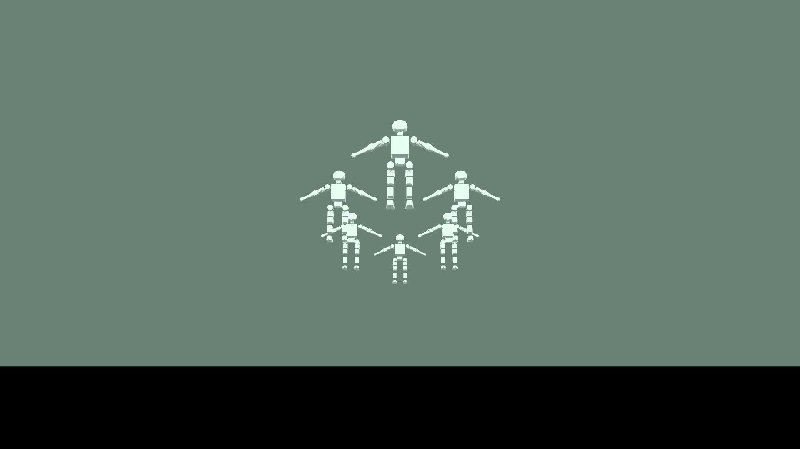
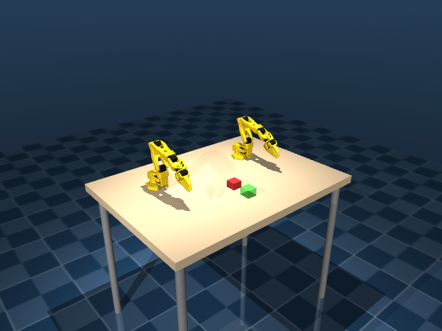

Dhyan Thakkar
Robotics Researcher & Engineer — Embodied AI, Humanoids & HRI. MS in Robotics at the University of Minnesota.
Robotics Researcher & Engineer — Embodied AI, Humanoids & HRI. MS in Robotics at the University of Minnesota.

I'm a Robotics Researcher & Engineer specializing in Embodied AI, Human-Robot Interaction, and real-time kinematic retargeting for humanoids and quadrupeds. I build high-throughput (30 FPS) vision-to-motion pipelines and online system identification for dynamic platforms — most recently a namespaced multi-robot Booster K1 humanoid fleet across Gazebo, MuJoCo, and Isaac Sim.
I'm completing my MS in Robotics at the University of Minnesota (Dec 2026), and I'm an outreach volunteer & summer instructor at the Minnesota Robotics Institute.
ROS 2 Jazzy workspace for the 22-DoF Booster K1 humanoid: namespaced multi-robot fleet verified across three simulation backends (Gazebo Harmonic, MuJoCo, Isaac Sim) with SDK-style endpoints. Trained a blind, contact-free velocity locomotion policy (5,000 iterations, RSL-RL) in Isaac Lab 3.0 with teacher–student distillation, plus a MuJoCo RoboCup 3v3 demo (6 K1s) and a ZED 2i stereo replica in Isaac Sim.

Single- and dual-arm SO-101 environments (6/12 joints, 5–6 cameras) spanning seven manipulation tasks — pick-lift, pick-and-place, push-T, ramp/bridge pushes, dual-arm cylinder grasp/reach — with a backend-agnostic RL training layer (skrl / rsl_rl) plus teleop data collection.

Simulated Livox MID360 LiDAR capture and a 3D detection pipeline (LivoxDetection / OpenPCDet) for the thesis platform, plus an LLM-based planner with person re-identification and multi-object tracking for human action understanding — using VoxelNeX for LiDAR detection and LiDAR-HMR for human mesh recovery.

Research, engineering, and outreach
September 2024 – Present · Minneapolis, MN
Led 4+ K-12 outreach events engaging 300+ students in hands-on robotics demos and STEM workshops. Lead instructor for the UMN Robotics Summer Camp (50–70 students), teaching advanced robotics concepts and capstone projects.
January 2024 – June 2024 · Ahmedabad, India
Realtime Visual-Inertial Odometry on multicopters (5% less vertical deviation). LLM-based navigation on Unitree Go2 via SLAM with 4D LiDAR and camera sensing. GSLAM-based AMR systems for 200 lb+ warehouse payloads.
May 2023 – July 2023 · Ahmedabad, India
Deployed YOLOv8 with 30 FPS inference at 89% accuracy for vehicle classification and 67% precision in speed determination, trained on a custom 33,000+ image dataset.
September 2021 – December 2022 · Ahmedabad, India
Streamlined remote development and containerization across HPC systems and clusters. Designed a Bi-LSTM model to forecast cloud compute usage and improve resource scaling efficiency.
Present · Remote
Represent student interests within the committee and engage with researchers at the frontier of whole-body motion planning and loco-manipulation.
August 2024 – December 2026 · Minneapolis, MN
September 2020 – May 2024 · Ahmedabad, India
Selected work — full list on the CV
Jul 2026 – Aug 2026 · PyTorch, NVIDIA Isaac-GR00T
VQA experiment runners to evaluate GR00T model intent predictions on video clips, including clip-to-task matching and a scripted approved-model download pipeline.
Jul 2026 · Python, Cosmos3, ffmpeg, rclone
Batch video-to-video generation and captioning pipeline (5-second segment captions + event detection via Cosmos3 Reasoner) with segmentation, style/scene variation, and Google Drive sync.
Oct 2025 · Isaac Sim, MuJoCo, ROS
Low-latency pipeline recovering 3D human sequences from monocular RGB, with Gaussian Mixture Regression + TWIST motion mapping at stable 30 FPS on 6 GB VRAM, benchmarked against AMASS.
Dec 2025 · ANYmal, Unitree Go1
Adaptive online estimation of object properties (mass, CoM, moments of inertia) during manipulation — 89% success rate with mean angular error under 10°.
Apr 2025 · Python, VLMs, Hugging Face, Habitat
QWEN2.5VL 8B navigation with scene graphs; fine-tuned Qwen2.5 & InternVL3 for visual scene grounding (78.64% ObjectNav, 62.35% OVMM); +27% landmark pose estimation via camera-intrinsic tokens.
Nov 2024 · Isaac Sim, PX4, PPO
Reduced VIO jumps by 80% with RL-based UAV control using RGB-D, EKF pose estimation, and segmentation-based detection; PPO agent for hovering and orbiting in Isaac Sim/Lab.
Apr 2024 · Python, OpenCV, Unitree SDK2
Conversational agent with 15+ retrievable goal landmark tokens navigating 1,700+ sq. ft. dynamic indoor environments at sub-782ms latency on a custom audio pipeline.
Jan – Jun 2024 · ROS2 Nav2, G-SLAM, 4D LiDAR
Autonomous mobile robots transporting 200 lb+ payloads in warehouse environments; LLM-based navigation via 4D LiDAR and camera sensing; VIO on multicopters with 5% less vertical deviation.
ICRA 2026 Workshop on Contact-Rich Manipulation · 2026
April 2023
May 2023
July 2022
Python, C/C++, CUDA, Shell, MATLAB, Docker
NVIDIA Isaac Sim/Lab, MuJoCo, Gazebo, Habitat Sim, AWS RoboMaker
ROS 2 (Jazzy, Humble), ROS (Noetic), Nav2, Unitree SDK2, PX4, MAVROS
PyTorch, Hugging Face, RLLib, RSL-RL, skrl, DeepSpeed, MMCV, YOLOv8, Bi-LSTM
Jetson Nano, Raspberry Pi, Unitree Go1/Go2/G1, Booster K1, SO-101, ANYmal, Agate HPC Cluster
RGB-D sensing, LiDAR 3D detection (Livox MID360, VoxelNeX, OpenPCDet), EKF pose estimation, vSLAM, G-SLAM, Intel RealSense